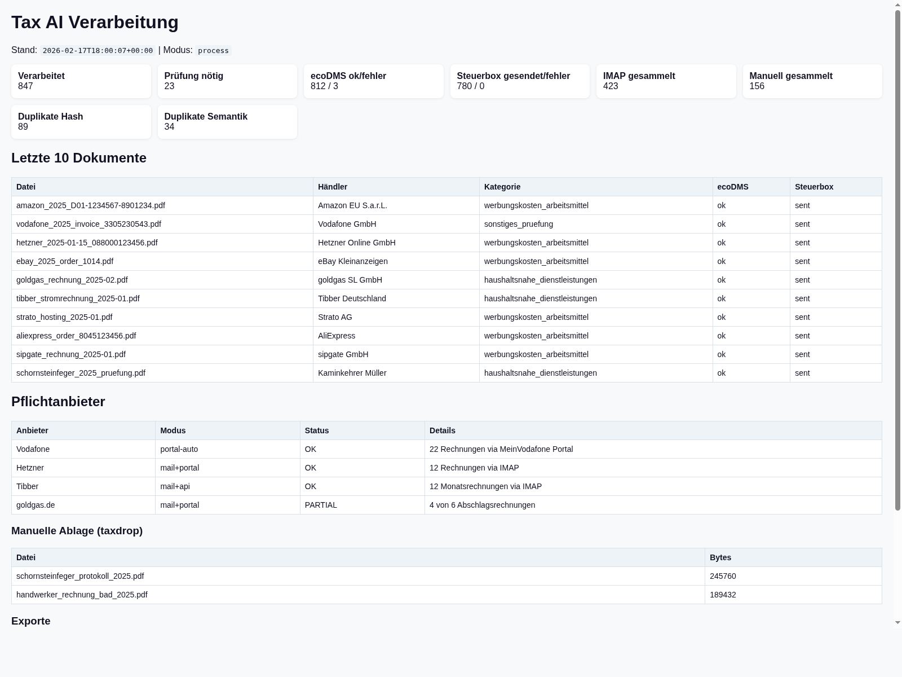
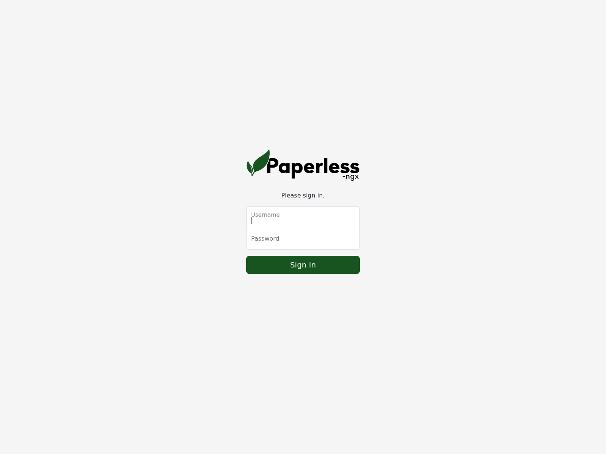

KI-gestuetzte Steuerbeleg-Pipeline fuer die private Einkommenssteuererklaerung 2025. Automatische Erfassung, OCR, Klassifizierung und Archivierung mit lokaler KI.
Docker + Ollama + Paperless-NGX + SteuerboxIceAI Tax 2025 automatisiert den kompletten Workflow von der Belegerfassung bis zur fertigen Einkommenssteuererklaerung. Der selbst-gehostete Docker-Stack laeuft vollstaendig lokal – keine Daten verlassen das Netzwerk.
Belege aus E-Mail (IMAP), Webportalen (Amazon, eBay, Vodafone), Outlook-Archiven (PST) und manueller Ablage (SMB).
OCR via Tesseract, strukturierte Datenextraktion via Ollama (Qwen 2.5). Haendler, Betraege, MwSt – vollautomatisch.
Regelbasierte Zuordnung zu Werbungskosten, Sonderausgaben, Haushaltsnahen Leistungen – mit Haendler-Overrides.
CSV-Export, automatischer Upload an Buhl Steuerbox (WISO Steuer), Archivierung in Paperless-NGX und ecoDMS.
| Quelle | Methode | Details |
|---|---|---|
| E-Mail (IMAP) | Automatisch | Gmail, iCloud, ProtonMail, lokaler Mailserver. Regex-Filter fuer Rechnungsbegriffe. |
| Amazon | Selenium Portal | Bestellhistorie durchlaufen, Rechnungs-PDFs herunterladen. Cookie-Persistenz. |
| eBay | Selenium Portal | Kaufuebersicht scrapen. Fallback-Screenshots wenn kein PDF verfuegbar. |
| Vodafone | API + Portal | MeinVodafone REST-API fuer Rechnungs-PDFs. Interaktiver Login via noVNC. |
| Outlook PST | readpst | Outlook-Archive (PST/EML) parsen, steuerrelevante Anhaenge extrahieren. |
| Manuelle Ablage | SMB Share | /srv/taxdrop – fuer Handscanner, manuelle Downloads etc. |
PDFs werden nativ via pdftotext extrahiert. Gescannte PDFs und Bilder
durchlaufen Tesseract OCR (Deutsch + Englisch). Max. 5 Seiten pro PDF.
Das lokale LLM (Qwen 2.5 auf Ollama) extrahiert strukturierte Daten mit JSON-Schema-Enforcement:
{
"document_type": "invoice",
"merchant": "Amazon EU S.a.r.L.",
"invoice_number": "206-1234567-8901234",
"invoice_date": "2025-01-15",
"gross_amount": 99.99,
"vat_amount": 15.97,
"confidence": 0.95,
"review_required": false
}Zweistufige Klassifizierung: Haendler-Override → Keyword-Match → Fallback. Deduplizierung per SHA256-Hash und semantischem Fingerprint (Haendler + Datum + Rechnungsnummer + Betrag).
CSV-Export fuer manuellen Import, automatischer SMTP-Upload an Buhl Steuerbox (WISO Steuer), Archivierung in Paperless-NGX mit hierarchischen Tags.
| Service | Image | Funktion | Port |
|---|---|---|---|
| paperless | paperless-ngx:latest | Dokumentenmanagement & Volltextsuche | 8010 |
| db | postgres:16 | Paperless-Datenbank | – |
| redis | redis:7 | Paperless-Cache & Queue | – |
| gotenberg | gotenberg:8.11 | PDF-Konvertierung | – |
| tika | apache/tika:3.2.1 | Dokumenten-Parsing | – |
| tax-pipeline | python:3.13 + OCR | Haupt-Pipeline (OCR, Klassifizierung, Export) | – |
| status-web | python:3.13 | Web-Dashboard & Review-UI | 8787 |
| portal-fetcher | python:3.13 + Selenium | Portal-Automatisierung | – |
| portal-browser | selenium/chromium | Headless Browser + noVNC | 7900 |
| proton-bridge | protonmail-bridge | ProtonMail IMAP-Bridge | 1143 |
Pipeline-Orchestrator: Koordiniert Sammeln, OCR, LLM-Extraktion, Deduplizierung und Export.
LLM-Integration: Sendet OCR-Text an Ollama, empfaengt JSON mit Haendler, Betrag, MwSt.
Steuerkategorie-Zuordnung: Laedt taxonomy.yml, wendet Haendler-Overrides und Keyword-Match an.
Multi-Account IMAP-Sammler: Filtert Mails per Regex, extrahiert Anhaenge, Body-Fallback.
Selenium WebDriver: Automatisiert Amazon/eBay/Vodafone-Logins und Rechnungsdownloads.
SMTP-basierter Upload: Sendet Belege per E-Mail an Buhl Steuerbox fuer WISO Steuer.


Die Taxonomie definiert die Zuordnung von Belegen zu Steuerkategorien fuer die Einkommenssteuererklaerung:
| Kategorie | Keywords | Steuer-Hinweis |
|---|---|---|
| Arbeitsmittel | Monitor, Tastatur, Drucker, Laptop, Headset, Notebook | Werbungskosten > Arbeitsmittel |
| Fahrtkosten | Bahn, Ticket, Fahrkarte, Tank, Parken, Sprit | Werbungskosten > Fahrtkosten |
| Spenden | Spende, Charity, Zuwendungsbestaetigung | Sonderausgaben > Spenden |
| Haushaltsnahe | Handwerker, Wartung, Reinigung, Schornsteinfeger | Haushaltsnahe Leistungen |
| Pruefung | (Fallback – keine Keywords matched) | Manuelle Pruefung erforderlich |
Bekannte Haendler werden direkt einer Kategorie zugeordnet:
| Haendler | Kategorie |
|---|---|
| Amazon, Amazon.de | Arbeitsmittel |
| eBay, Kleinanzeigen | Arbeitsmittel |
| AliExpress | Arbeitsmittel |
Der supplier_gap_report.py prueft, ob alle monatlichen Rechnungen
von Pflichtanbietern vorhanden sind:
Alle Komponenten laufen lokal – keine Cloud-Abhaengigkeiten, keine Daten verlassen das Netzwerk.
Ollama + Qwen 2.5 – Lokale LLM-Extraktion
Tesseract OCR – Zeichenerkennung (deu+eng)
Poppler – PDF-Verarbeitung
Paperless-NGX – Langzeitarchiv
ecoDMS – DMS-Integration (optional)
Apache Tika – Dokumenten-Parsing
Selenium + Chromium – Portal-Scraping
Python 3.13 – Pipeline-Logik
Docker Compose – Orchestrierung
PostgreSQL 16 – Datenbank
Redis 7 – Cache & Queue
Gotenberg – PDF-Konvertierung
ProtonMail Bridge – Verschluesselte E-Mail
qwen2.5:7b-instruct Modellgit clone https://github.com/icepaule/IceAI-tax-2025.git
cd IceAI-tax-2025
# Bootstrap: Verzeichnisse anlegen, Container bauen
make bootstrap
# .env mit eigenen Zugangsdaten befuellen
cp .env.example .env
nano .env
# Stack starten
make up# Belege einsammeln (IMAP + Portal + SMB)
make collect
# Pipeline ausfuehren (OCR + KI + Klassifizierung + Export)
make run
# Status-Dashboard oeffnen
make status
# -> http://localhost:8787
# Pflichtanbieter-Luecken pruefen
make supplier-gap# Browser starten
make portal-up
# Login-Sessions speichern (noVNC: http://localhost:7900)
make portal-login-amazon
make portal-login-ebay
make portal-login-vodafone
# Rechnungen herunterladen
make portal-fetch-amazon
make portal-fetch-ebay
make portal-fetch-vodafone